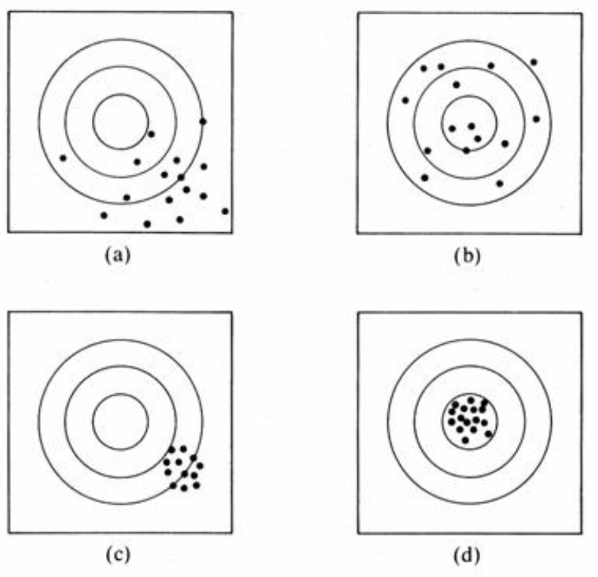
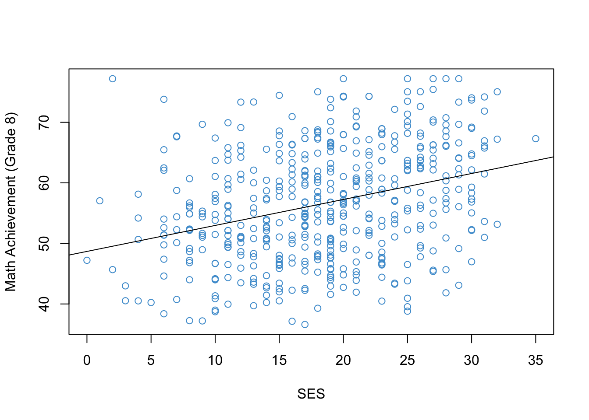

# This is a comment. R doesn't read it.
# Below is a code snippet. R will read it and return the result.
2 + 2[1] 4This chapter is an exception to the overall format described in the Preface. It reviews some foundational material from EDUC 710 (Stat 1) that is useful for this course. There will be time to ask questions about the review material in the first class and second class, but there will not be time to review everything. So, if this review feels too short, you may also want to review your notes from EDUC 710.
Please read up to the Exercises in Section 1.10 before the first class. We will address any questions about this material in the first class and then begin the Exercises together.
Summation notation uses the symbol \(\Sigma\) to stand-in for summation. For example, instead of writing
\[ X_1 + X_2 + X_3 + .... + X_N\]
to represent the sum of the values of the variable \(X\) in a sample of size \(N\), we can instead write:
\[ \sum_{i=1}^{N} X_i. \]
The symbol \(\Sigma\) means “add.” The symbol is called “Sigma” – it’s the capital Greek letter corresponding to the Latin letter “S”. The value \(i\) is called the index, and \(1\) is the starting value of the index and \(N\) is the end value of the index. You can choose whatever start and end values you want to sum over. For example, if we just want to add the second and third values of \(X\), we write
\[ \sum_{i=2}^{3} X_i = X_2 + X_3. \]
When the start and end values are clear from context, we can use a shorthand notation that omits them. In the following, it is implicit that the sum is over all available values of \(X\) (i.e., from \(1\) to \(N\)):
\[ \sum_i X_i. \]
There are rules for manipulating summation notation that are useful for deriving results in statistics. You don’t need to do mathematical proofs or derivations in this class, but you will occasionally see some derivations in these notes (mainly in the optional sections).
Here are the rules:
Rule 1: Sum of a constant (multiplication). Adding a constant to itself is equivalent to multiplication.
\[\begin{align} \sum_{i = 1}^{N} c &= c + c + .... \\ & = Nc \end{align}\]Rule 2: Distributive property. Multiplying each term of a sum by a constant is the same as multiplying the sum by a constant.
\[\begin{align} \sum_{i = 1}^{N} c X_i &= cX_1 + cX_2 + .... \\ & = c(X_1 + X_2 + ....) \\ & = c \sum_{i = 1}^{N} X_i \end{align}\]Rule 3: Associative property. It doesn’t matter what order we do addition in.
\[\begin{align} \sum_{i = 1}^{N} (X_i + Y_i) &= (X_1 + Y_1) + (X_2 + Y_2) + .... \\ & = (X_1 + X_2 + ....) + (Y_1 + Y_2 + ....) \\ & = \sum_{i = 1}^{N} X_i + \sum_{i = 1}^{N} Y_i \end{align}\]Summation notation is useful for writing the formulas of statistics. The main statistics we use in the class are the mean, standard deviation, variance, covariance, and correlation. These are the building blocks for regression. Their symbols and formulas are presented below (using the shorthand summation notation). If you don’t remember their interpretation, you will need to go back to your Stat 1 notes.
\[\bar X = \frac{\sum_i X_i}{N}\]
\[ \text{var}(X) = \frac{\sum_i (X_i - \bar X)^2}{N - 1} \]
\[ \text{SD}(X) = \sqrt{\text{var}(X)} \]
\[\text{cov}(X, Y) = \frac{\sum_i (X_i - \bar X) (Y_i - \bar Y)}{N - 1} \]
\[\text{cor}(X, Y) = \frac{\text{cov}(X, Y)}{\sqrt{\text{var}(X)} \sqrt{\text{var}(Y)}} \]
For numerical examples see Section 1.10.8.
The following are some useful properties of the sample statistics reviewed above. The properties tell us what happens to means, variances, covariances, and correlations when a variable is linearly transformed. We often linearly transform data (e.g., to compute percentages, proportions, z-scores, and in linear regression), so these properties turn out to be quite handy.
You can derive the properties using the rules of summation. For each property, the beginning of the derivation is shown. You should know the properties but completing the derivations is optional.
Sum of deviations from the mean. If we subtract the mean from each data point, we have a deviation (or deviation score): \(d_i = X_i - \bar X\). Deviation scores sum to zero: \(\sum_i d_i = 0\).
\[ \sum_i d_i = \sum_i(X_i - \bar X) = \dots \]
Mean of a linear transformation. If \(Y_i = A + B X_i\) with known constants \(A\) and \(B\), then \(\bar{Y} = A + B \bar{X}\)
\[ \bar{Y} = \frac{\sum_i Y_i}{N} = \frac{\sum_i( A + B X_i)}{N} = \dots \] Variance of a linear transformation. If \(Y_i = A + B X_i\) with known constants \(A\) and \(B\), then \(\text{var}(Y) = B^2\text{var}(X)\)
\[ \text{var}(Y) = \frac{\sum_i (Y_i - \bar{Y})^2}{N-1} = \frac{\sum_i ((A + B X_i) - (A + B \bar{X}))^2}{N-1} = \dots\] Mean and variance of a z-score. The z-score (or standardized score) is defined as \(Z_i = (X_i - \bar{X}) / \text{SD}(X)\). Standardized scores are useful because \(\bar{Z} = 0\) and \(\text{var}(Z) = 1\).
Covariance of linear transformations. If \(Y_i = A + B X_i\) and \(W_i = C + D U_i\) with known constants \(A\), \(B\), \(C\), \(D\), then \(\text{cov}(Y, W) = BD\,\text{cov}(X, U)\)
\[ \text{cov}(Y, W) = \frac{\sum_i ((A + B X_i) - (A + B \bar{X}))((C + D U_i) - (C + D \bar{U}))}{N-1} = \dots\]
Correlation of linear transformations. If \(Y_i = A + B X_i\) and \(W_i = C + D U_i\) with known constants \(A\), \(B\), \(C\), \(D\), then \(\text{cor}(Y, W) = \text{cor}(X, U)\) – i.e., the correlation is not affected by linear transformations.
In this section we consider two more important properties of sample statistics. These properties are defined in terms of sampling distributions. Recall that a sampling distribution arises from the following thought experiment:
Take a random sample of size \(N\) from a population of interest.
Compute a statistic using the sample data. It can be any statistic, but let’s say the mean, \(\bar X\), for concreteness.
Write down the value of the mean, and then return the sample to the population.
After doing these 3 steps many times, you will have many values the sample mean,
\[ \bar{X}_1, \bar{X}_2, \bar{X}_3, \bar{X}_4, \bar{X}_5, ... \]
The distribution of these sample means is called a sampling distribution (i.e., the sampling distribution of the mean). A sampling distribution is just like any other distribution – so it has its own mean, and its own variance, etc. These quantities, when computed for a sampling distribution, have special names.
The expected value of the mean, denoted \(E(\bar X)\), is the mean of the sampling distribution of the mean. That is a mouthful! That is why we say the “expected value” or “expectation” of a statistic rather than the mean of a statistic. It’s called the expected value because it’s the average value over many samples.
The standard error of the mean, denoted \(SE(\bar X)\), is the standard deviation of the sampling distribution of the mean. It describes the sample-to-sample variation of the mean around its expected value.
Now for the two additional properties of sample statistics:
Bias: If the expected value of a statistic is equal to a population parameter, we say that the statistic is an unbiased estimate of that parameter. For example, the expected value of the sample mean is equal to the population mean (in symbols: \(E(\bar{X}) = \mu)\), so we say that the sample mean is an unbiased estimate of the population mean.
Precision: The inverse of the squared standard error (i.e., \(1 / \text{SE}(\bar{X})^2\)) is called the precision of a statistic. So, the less a statistic varies from sample to sample, the more precise it is. That should hopefully make intuitive sense. The main thing to know about precision is that it is usually increasing in the sample size – i.e., we get more precise estimates by using larger samples. Again, this should feel intuitive.
Below is a figure that is often used to illustrate the ideas of bias and precision. The middle of the concentric circles represent the target parameter (like a bull’s eye) and the dots represent the sampling distribution of a statistic. You should be able to describe each panel in terms of the bias and precision of the statistic.

The \(t\)-test is used to make an inference about the value of an unknown population parameter. The test compares the value of an unbiased estimate of the parameter to a hypothesized value of the parameter. It is assumed that the sampling distribution of the estimate is a normal distribution, so the \(t\)-test applies to statistics like means and regression coefficients.
The conceptual formula for a \(t\)-test is
\[ t = \frac{\text{unbiased estimate} - \text{hypothesized value }}{\text{standard error}} \] When we conduct a \(t\)-test, the basic rationale is as follows: If the “true” population parameter is equal to the hypothesized value, then the estimate should be close to the hypothesized value, and so \(t\) should be close to zero.
In order to determine what values of \(t\) are “close to zero”, we refer to its sampling distribution, which is called the \(t\)-distribution. The \(t\)-distribution tells what values of \(t\) are typical if the hypothesis is true. Some examples of the \(t\)-distribution are shown in the figure below. The x-axis denotes values of the statistic \(t\) shown above, and \(\nu\) is parameter called the “degrees of freedom” (more on this soon).

You can see that the \(t\)-distribution looks like a normal distribution centered a zero. So, when the hypothesis is true, the expected value of \(t\) is zero. Informally, we could say that, if the hypothesis is true, values of \(t\) greater than \(\pm 2\) are pretty unlikely, and values greater than \(\pm 4\) are very unlikely.
More formally, we can make an inference about whether the population parameter is equal to the hypothesized value by comparing the value of \(t\) computed in our sample, denoted as \(t_{\text{obs}}\), to a “critical value”, denoted as \(t^*\). The critical value is chosen so that the “significance level”, defined as \(\alpha = \text{Prob}(|t| \geq t^*)\), is sufficiently small. The significance level is chosen by the researcher. Often it is set to \(.05\) or \(.01.\)
There are two equivalent ways of “formally” conducting a \(t\)-test.
Compare the observed value of \(t\) to the critical value. Specifically: if \(|t_{\text{obs}}| > t^*\), reject the hypothesis.
Compare the significance level chosen by the researcher, \(\alpha\), to the “p-value” of the test, computed as \(p = \text{Prob}(|t| \geq |t_{\text{obs}}|)\). Specifically: if \(p < \alpha\), reject the hypothesis.
Informally, both of these just mean that the absolute value of \(t\) should be pretty big (i.e., greater than \(t^*\)) before we reject the hypothesis.
A couple more things before moving on.
First, the hypothesized value of the population parameter is often zero, in which case it is called a null hypothesis. The null hypothesis usually translates into a research hypothesis of “no effect” or “no relationship.” So, if we reject the null hypothesis, we conclude that there was an effect.
Second, the t-distribution has a single parameter called its “degrees of freedom”, which is denoted as \(\nu\) in Figure 1.2. The degrees of freedom are an increasing function of the sample size, with larger samples leading to more degrees of freedom. When the degrees of freedom approach \(\infty\), the \(t\)-distribution approaches a normal distribution. This means that the difference between a \(t\)-test and a \(z\)-test is pretty minor in large samples (say \(N \geq 100\)).
A confidence interval uses the same equation as a \(t\)-test, except we solve for the population parameter rather than the value of \(t\). Whereas a \(t\)-test lets us make a guess about specific value of the parameter of interest (i.e., the null-hypothesized value), a confidence interval gives us a range of values that include the parameter of interest, with some degree of “confidence.”
Confidence intervals have the general formula:
\[\text{Interval} = \text{unbiased estimate} \pm t \times {\text{standard error}}. \] We get the value of \(t\) from the \(t\)-distribution. In particular, if we want the interval to include the true population parameter \((1-\alpha) \times 100\%\) of the time, then we choose \(t\) to be the \(\alpha/2 \times 100\) percentile of the \(t\)-distribution. For example, if we set \(\alpha = .05\), we will have a \((1-\alpha) \times 100 = 95\%\) confidence interval by choosing \(t\) to be the \(\alpha/2 \times 100 = 2.5\)-th percentile of the \(t\)-distribution.
As mentioned, \(t\)-tests and confidence intervals are closely related. In particular, if the confidence interval includes the value \(0\), this is the same as retaining the null hypothesis that the parameter is equal to \(0\). This should make intuitive sense. If the confidence interval includes \(0\), we are saying that it is a reasonable value of the population parameter, so we should not reject that value. This equivalence between tests and confidence intervals assumes we use the same level of \(\alpha\) for both of them.
In summary, if the confidence interval includes zero, we retain the null hypothesis at the stated level of \(\alpha\). If the confidence interval does not include zero, we reject the null hypothesis at the stated level of \(\alpha\).
The \(F\)-test is used to infer if two independent variances have the same expected value. This turns out to be useful when we analyze the variance of a variable into different sources (i.e., Analysis of Variance or ANOVA).
A variance can be defined as a sum-of-squares divided by its degrees of freedom. For example, the sample variance is just a sum-of-squared deviations from the sample mean (a sum of squares) divided by \(N - 1\) (its degrees of freedom).
The generic formula for an F-test is the ratio of two variances:
\[F = \frac{SS_A / df_A}{SS_B / df_B}, \]
where \(SS\) denotes sums-of-squares and \(df\) denotes degrees of freedom.
Just the like \(t\)-test, the \(F\)-test is called by the letter “F” because it has an \(F\)-distribution when the null hypothesis is true (i.e., when the variances have the same expected value). The plot below shows some examples of \(F\)- distributions. These distributions tell us the values of \(F\) that are likely, if the null hypothesis is true.

The F distribution has two parameters, which are referred to as the “degrees of freedom in the numerator” and the “degrees of freedom in the denominator” (in the figure, d1 and d2, respectively). We always write the numerator \(df\) first and then the denominator \(df\). So, the green line in the figure is “an \(F\)-distribution on 10 and 1 degrees of freedom”, which means the \(df\) in the numerator is 10 and the \(df\) in the denominator is 1.
We use an \(F\)-test the same way we use a \(t\)-test – we set a significance level and use this level to determine how large the value of \(F\) needs to be for us to reject the null hypothesis. The main difference is that \(F\) is non-negative, because it is the ratio of squared numbers. We don’t usually compute confidence intervals for statistics with an \(F\)-distribution.
It is important to write up the results of statistical analyses in a way that other people will understand. For this reason, there are conventions about how to report statistical results. In this class, we will mainly use tables and figures (formatted in R) rather than inline text. But sometimes reporting statistics using inline text unavoidable, in which case this course will use APA formatting. You don’t need to use APA in this class, but you should be familiar with some kind of conventions for reporting statistical results in your academic writing.
The examples below illustrate APA conventions. We haven’t covered the examples, they are just illustrative of the formatting (spacing, italics, number of decimal places, whether or not to use a leading zero before a decimal, etc). More details are available online (for example, here).
Jointly, the two predictors explained about 22% of the variation in Academic Achievement, which was statistically significant at the .05 level (\(R^2 = .22, F(2, 247) = 29.63, p < .001\)).
After controlling for SES, a one unit of increase in Maternal Education was associated with \(b = 1.33\) units of increase in Academic Achievement (\(t(247) = 5.26, p < .001\)).
After controlling for Maternal Education, a one unit of increase in SES was associated with \(b = 0.32\) units of increase in Academic Achievement. This was a statistically significant relationship (\(t(247) = 2.91, p < .01\)).
This section will walk through some basics of programming with R. We will get started with this part of the review in the first class. You don’t need to do it before class.
If you are already familiar with R, please skim through the content and work on getting the NELS data loaded. If you are not familiar with R, or would like to brush up your R skills, you should work through this section.
Some things to know about R before getting started:
R is case sensitive. It matters if you useCAPS or lowercase in your code.
Each new R command should begin on its own line.
Unlike many other programming languages, R commands do not need to end with punctuation (e.g., ; or .).
R uses the hash tag symbol (#) for comments. Comments are ignored by R but can be helpful for yourself and others to understand what your code does. An example is below.
# This is a comment. R doesn't read it.
# Below is a code snippet. R will read it and return the result.
2 + 2[1] 4rm or the brush icon in R Studio - make sure to ask about how to do this in class if you aren’t sure.As we have just seen, R can do basic math like a calculator. Some more examples are presented in the code snippets below. R’s main math symbols are
+ addition- subtraction or negative numbers* multiplication/ division (don’t use \)^ or ** exponentiation2 * 2[1] 4# Remember pedmas? Make sure to use parentheses "()",
# not brackets "[]" or braces "{}"
(2 - 3) * 4 / 5 [1] -0.8# Exponentiation can be done two ways
2^3[1] 82**3[1] 8# Square roots are "squirt". Again, make sure to use "()",
# not brackets "[]" or braces "{}"
sqrt(25)[1] 5# Logs and exponents, base e (2.718282....) by default
log(100)[1] 4.60517exp(1)[1] 2.718282# We can override the default log by using the "base" option
log(100, base = 2)[1] 6.643856# Special numbers...
pi [1] 3.141593help functionThe help function is your best friend when using R. If we want more info on how to use an R function (like log), type:
help(log)If you don’t exactly remember the name of the function, using ??log will open a more complete menu of options.
R can also work with logical symbols that evaluate to TRUE or FALSE. R’s main logical symbols are
== is equal to!= is not equal to> greater than< less than>= greater than or equal to<= less than or equal toHere are some examples:
2 + 2 == 4[1] TRUE2 + 2 == 5[1] FALSE2 + 3 > 5[1] FALSE2 + 3 >= 5[1] TRUEThe main thing to note is that the logical operators return TRUE or FALSE as their output, not numbers. There are also symbols for logical conjunction (&) and disjunction (|), but we won’t get to those until later.
In addition to numbers and logicals, R can work with text (also called “strings”). We wont use strings a lot but they are worth knowing about.
"This is a string in R. The quotation marks tell R the input is text."[1] "This is a string in R. The quotation marks tell R the input is text."Often we want to save the result of a calculation so that we can use it later on. In R, this means we need to assign the result a name. Once we assign the result a name, we can use that name to refer to the result, without having to re-do the calculation that produced the result. For example:
x <- 2 + 2Now we have given the result of 2 + 2 the name “x” using the assignment operator, <-.
Note that R no longer prints the result of the calculation to the console. If we want to see the result, we can type x
# To see the result a name refers to, just type the name
x [1] 4We can also do assignment with the = operator.
y = 2 + 2
y[1] 4It’s important to note that the = operator also gets used in other ways (e.g., to override default values in functions like log). Also, the math interpretation of “=” doesn’t really capture what is happening with assignment in computer code. In the above code, we are not saying that “2 + 2 equals y.” Instead, we are saying, “2 + 2 equals 4 and I want to refer to 4 later with the name ‘y’.”
Almost anything in R can be given a name and thereby saved in memory for later use. Assignment will become a lot more important when we name things like datasets, so that we can use the data for other things later on.
A few other side notes:
Names cannot include spaces or start with numbers. If you want separate words in a name, consider using a period ., an underscore _, or CamelCaseNotation.
You can’t use the same name twice. If you use a name, and then later on re-assign that same name to a different result, the name will now only represent the new result. The old result will no longer have a name, it will be lost in the computer’s memory and will be cleaned up by R’s garbage collector. Because R’s memory is cumulative, it’s important to keep track of names to make sure you know what’s what.
R has some names that are reserved for built-in stuff, like log and exp and pi. You can override those names, but R will give a warning. If you override the name, this means you can’t use the built-in functions until you delete that name (e.g., rm(x)).
In words, describe what the following R commands do.
x <- 7
x = 7
x == 7
7 -> x
7 > x
Answers: Check the commands in R.
In research settings, we often want to work with multiple numbers at once (surprise!). R has many data types or “objects” for doing this, for example, vectors, matrices, arrays, data.frames, and lists. We will start by looking at vectors.
Here is an example vector, containing the sequence of integers from 15 to 25.
# A vector containing the sequence of integers from 15 to 25
y <- 15:25
y [1] 15 16 17 18 19 20 21 22 23 24 25When we work with a vector of numbers, sometimes we only want to access a subset of them. To access elements of a vector we use the square bracket notation []. Here are some examples of how to index a vector with R:
# Print the first element of the vector y
# Note: use brackets "[]" not parens"()"
y[1][1] 15# The first 3 elements
y[1:3][1] 15 16 17# The last 5
y[6:11][1] 20 21 22 23 24 25We can also access elements of a vector that satisfy a given logical condition.
# Print the elements of the vector y that are greater than the value 22
y[y > 22][1] 23 24 25This trick often comes in handy so its worth understanding how it works. First let’s look again at what y is, and what the logical statement y > 22 evaluates to:
# This is the vector y
y [1] 15 16 17 18 19 20 21 22 23 24 25# This is the logical expression y > 22
y > 22 [1] FALSE FALSE FALSE FALSE FALSE FALSE FALSE FALSE TRUE TRUE TRUEWe can see that y > 22 evaluates to TRUE or FALSE depending on whether the correspond number in the vector y is greater than 22. When we use the logical vector as an index – R will then return all the values for which y > 22 is TRUE.
In general, we can index a vector y with any logical vector of the same length as y. The result will return only the values for which the logical vector is TRUE.
The following are examples of statistical operations you can do with vectors of numbers. These examples follow closely to Section 1.1 to Section 1.4
# Making a vector with the "c" command (combine)
x <- c(10, 9, 15, 15, 20, 17)
# Find out how long a vector is (i.e., the sample size)
length(x)[1] 6# Add up the elements of a vector
sum(x)[1] 86# Add up the elements of a subset of a vector
sum(x[2:3])[1] 24# Check the distributive rule
sum(x*2) == sum(x) * 2 [1] TRUE# Check the associative rule
y <- c(5, 11, 11, 19, 13, 15)
sum(x) + sum(y) == sum(x + y) [1] TRUE# Compute the mean
mean(x)[1] 14.33333# Compute the variance
var(x)[1] 17.46667# Compute the standard deviation
sd(x)[1] 4.179314# Compute the covariance
cov(x, y)[1] 10.66667# Compute the correlation
cor(x, y)[1] 0.5457986Most of the time, we will be reading-in data from an external source. The easiest way to do this is if the data is in the .RData file format. Then we can just double-click the .Rdata file and Rstudio will open the file, or we can use the load command in the console – both do the same thing.
To get started, let’s load the NELS data. The data are a subsample of the 1988 National Educational Longitudinal Survey (NELS; see https://nces.ed.gov/surveys/nels88/).
This data and codebook are available on the Canvas site of the course under “Files/Data/NELS” and are linked in the “Module” for Week 1. You need to download the data onto your machine and then open the data file (e.g., by clicking it, or double-clicking, or whatever you do to open files on your computer). That will do the same thing as the following line of code
#This is what happens when you double-click NELS.RData
load("NELS.RData")The function dim reports the number of rows (500 persons) and columns (48 variables) for the data set.
dim(NELS)[1] 500 48If you want to look at the data in a spreadsheet, use the following command. It won’t render anything in this book, but you can see what it does in R. (You may need to install XQuartz from https://www.xquartz.org if you are using a Mac.)
View(NELS)If you want to edit the data set using the spreadsheet, use edit(NELS). However, R’s spreadsheet editor is pretty wimpy, so if you want to edit data in spreadsheet format, use Excel or something.
Working with data is often made easier by “attaching”” the dataset. When a dataset it attached, this means that we can refer to the columns of the dataset by their names.
# Attach the data set
attach(NELS)
# Print the first 10 values of the NELS gender variable
gender[1:10] [1] Male Female Male Female Male Female Female Female Female Male
Levels: Female MaleWarning about attaching datasets. Once you attach a dataset, all of the column names in that dataset enter R’s working memory. If the column names in your dataset were already used, the old names are overwritten. If you attach the same dataset more than once in the same session, R will print a warning telling you that the previously named objects have been “masked” – this won’t affect your analyses, but it can be irritating.
The basic point: we should only attach each dataset once per R session. Once you are done using a data set it is good practice to detach it:
detach(NELS)Figure 1.4 shows the relationship between Grade 8 Math Achievement (percent correct on a math test) and Socioeconomic Status (SES; a composite measure on a scale from 0-35). Once you have reproduced this figure, you are ready to start the next chapter.
# Load and attach the NELS data
load("NELS.RData")
attach(NELS)
# Scatter plot
plot(x = ses,
y = achmat08,
col = "#4B9CD3",
ylab = "Math Achievement (Grade 8)",
xlab = "SES")
# Run a simple linear regression
mod <- lm(achmat08 ~ ses)
# Add the regression line to the plot
abline(mod)
# Detach the data set
detach(NELS)